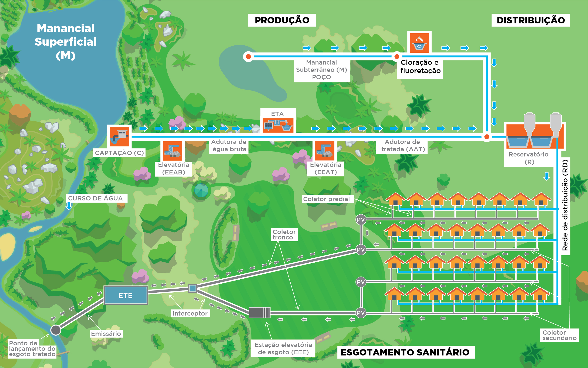
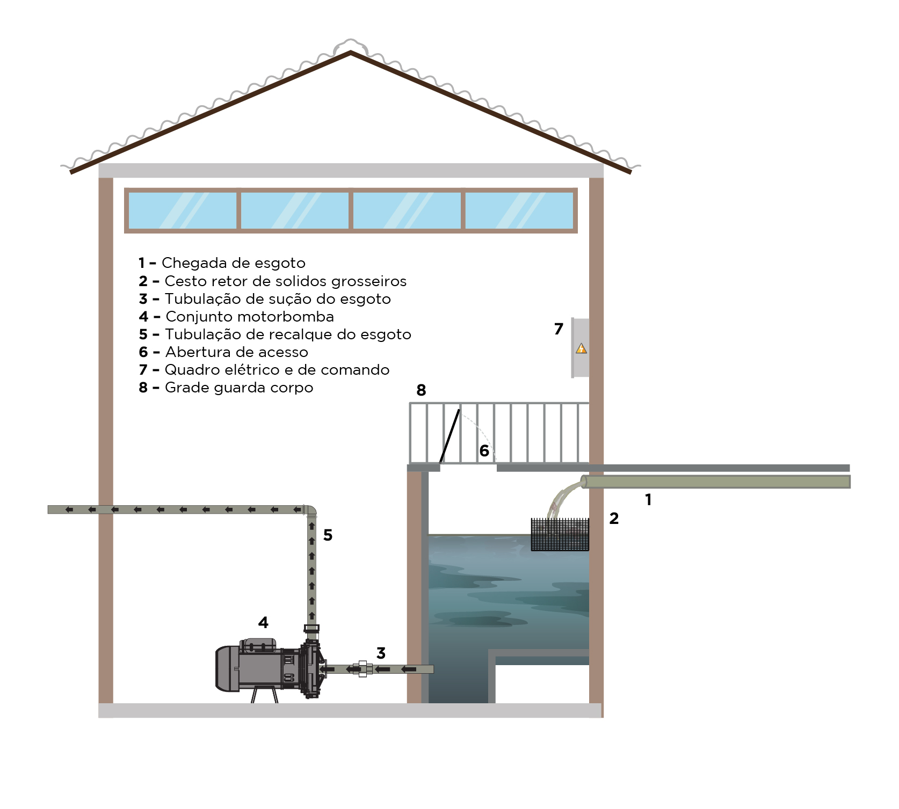
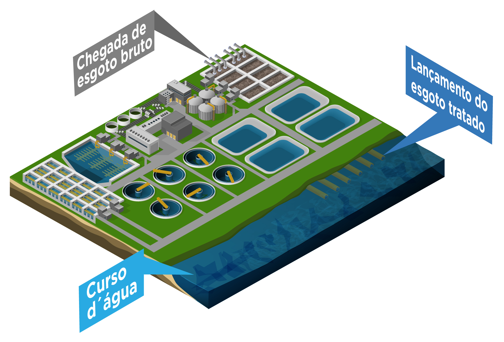

Tema 2 – Partes constituintes e tecnologias de esgotamento sanitário
O componente esgotamento sanitário deve ser constituído pelas atividades, infraestruturas e instalações operacionais de coleta, transporte, tratamento e disposição final adequada dos esgotos sanitários, desde as ligações prediais até o seu lançamento final no meio ambiente (BRASIL, 2007).
No início deste modulo, vocês puderam ver, resumidamente, que o saneamento básico compreende os serviços de água, esgoto, drenagem e resíduos sólidos. Por sua vez, cada um destes serviços é composto por equipamentos e dispositivos (partes constituintes) distintos que os caracterizam.
Desta forma, neste item serão tratados os conceitos e as partes constituintes do sistema de esgotamento sanitário, desde os afastamentos até a destinação final.
Vamos lá!
Definição e conceitos básicos
Sabe para onde vai a água depois de a utilizarmos?
Para ser usada pelos seres humanos, a água é retirada do meio ambiente, recebe tratamento para torná-la potável e, assim, é distribuída nos domicílios para, finalmente, o consumo, lavar louças, preparar alimentos, banhar-se, a higiene, entre outros usos. Após utilização humana, apresenta as suas características alteradas, transformando-se em águas residuárias ou esgoto doméstico.
Passeio virtual para conhecer o ciclo do saneamento
Fonte: Sabesp Cia
Publicado em 1º de dez. de 2015.
Essas águas residuárias devem retornar à natureza tratada, fechando o ciclo do saneamento. Você sabe o que é o ciclo de saneamento? Para entender melhor vamos fazer um passeio virtual na estação de tratamento de esgoto da Sabesp para conhecer o processo realizado, desde o momento que a água sai das residências até retornar ao meio ambiente.
As águas residuárias têm sido utilizadas por muitos autores em substituição ao termo esgotos sanitários, servindo como uma tradução literal para a palavra inglesa wastewater, embora esses termos denominem os mesmos efluentes líquidos. Para entender melhor o conceito de águas residuárias, vamos ver o balanço de entradas e saídas de uma residência (Figura 2.1).
Ilustração: Maykell Guimarães.
Composição das águas residuárias
Neste item será apresentada uma breve discussão sobre a composição dos esgotos. Ressalta-se aqui que esta composição depende muito do tipo da atividade humana que está ocorrendo (doméstica, pecuária e industrial) e, além disso, se este usuário tem acesso ao abastecimento de água para realizar essas atividades domésticas ou produtivas.
Sugestão de estudo
Frente a essa diversidade de composição dos esgotos em função do tipo de atividade que ocorre em uma determinada localidade, faça uma tabela síntese, elencando o tipo de usuário ou atividade (doméstica e industrial) e a composição do seu esgoto.
Assumindo que a atividade humana ocorra em uma localidade onde existe o acesso pleno ao abastecimento de água, e que essa atividade seja doméstica, pode-se dizer que o esgoto é composto por 99% de água e apenas 1% de material sólido em suspensão ou dissolvido nesta água. Deste 1% de material sólido, 70% é material orgânico (proteínas, carboidratos e gorduras) e 30% material inorgânico.
Nesse momento, torna-se importante uma breve discussão sobre a distribuição de tamanho desse material sólido contido nos esgotos. De uma maneira geral, a fração sólida existente nos esgotos varia de tamanho, sendo dividida em três categorias: i) material grosseiro (cascas de frutas, papéis, tecidos), ou seja, material de grande dimensão; ii) material em suspensão (colônias de microrganismos, material orgânico que se agrupou em pequenos flocos), ou seja, material que ainda pode ser visto pelos olhos humanos, mas, devido ao seu peso e tamanho, não se sedimentam, e, por fim, tem-se o material dissolvido (substâncias orgânicas, microrganismos, substâncias químicas, nitrogênio, fósforo), ou seja, material de dimensão reduzida que não pode ser visto individualmente pelos olhos humanos, mas que pode conferir cor a esse esgoto.
Traduzindo essa composição em termos de substâncias mais conhecidas, no senso comum, o esgoto é basicamente água, fezes, urina, sabões, produtos químicos, gorduras, restos de alimentos e outros tipos de matéria orgânica, fibras têxteis e cabelos, nutrientes, sólidos, iodo, coliformes termotolerantes, ovos de helmintos, protozoários, vírus. O Quadro 2.1 apresenta a definição para cada uma das substâncias que compõem o esgoto.
| Substância/material | Consideração |
|---|---|
| Água | O esgoto é basicamente composto por água; somente 1% do esgoto é composto por sólidos. |
| Fezes | Contêm matéria orgânica, nutrientes e diversos organismos potencialmente transmissores de doenças, como bactérias, vírus e vermes. |
| Urina | Contém muitos nutrientes que são importantes para as plantas (principalmente nitrogênio e fósforo) e raramente contém organismos causadores de doenças. Pode possuir resíduos de hormônios e medicamentos que, se encaminhados para os corpos d’água, são de difícil decomposição e podem contaminar a água de abastecimento. |
| Sabões | Poluentes em ambientes aquáticos, são menos prejudiciais quando dispostos no solo. Podem causar problemas de salinização do solo. |
| Produtos químicos | Alguns produtos presentes no esgoto interferem nos processos naturais na água e no solo, como o cloro e outros desinfetantes, mas são degradados com o tempo. Outros são mais persistentes no ambiente, e o ideal é evitar seu uso, como os venenos, as tinturas de cabelo contendo metais pesados, detergentes com componentes não biodegradáveis. |
| Gorduras | Materiais orgânicos de difícil decomposição. Ao serem lançadas na água, podem prejudicar os seres aquáticos e, no solo, podem causar a colmatação (fechamento dos poros), dificultando a infiltração da água. Podem ser separadas por processos de flotação, como acontece nas caixas de gordura, ou por filtros de matéria orgânica, como nos círculos de bananeiras. |
| Restos de alimentos e outros tipos de matéria orgânica | Compostos orgânicos geralmente são uma combinação de carbono, hidrogênio, oxigênio, nitrogênio e enxofre, entre outros. O tratamento da matéria orgânica do esgoto realizado em tanques sépticos ou reatores anaeróbios resulta na formação de nutrientes solúveis e gases (gás sulfídrico, gás carbônico e metano). |
| Fibras têxteis e cabelos | Substâncias inertes no ambiente e não são causadores de poluição ou contaminação. No entanto, podem causar entupimento em alguns tipos de sistemas de tratamento, como zona de raízes ou sistemas de reuso direto na irrigação, necessitando de filtragem prévia. |
| Nutrientes | Substâncias resultantes da degradação da matéria orgânica pelos microrganismos. |
| Sólidos | Cerca de 70% dos sólidos nos efluentes domésticos são de origem orgânica. O restante é composto por partículas de solo e outros materiais inertes. |
| Lodo | Os sólidos que decantam ao fundo de tanques e reatores compõem o lodo, juntamente com microrganismos e materiais orgânicos em decomposição. |
| Coliformes termotolerantes | Bactérias presentes em grandes quantidades nos intestinos de animais de sangue quente, incluindo o ser humano. Indicadores da possível contaminação por bactérias de origem intestinal, das quais algumas podem ser causadoras de doenças. |
| Ovos de helmintos | Os vermes intestinais podem ser transmitidos quando partes do corpo ou os alimentos entram em contato com seus ovos ou larvas, transportadas pelas fezes. Sistemas de tratamento de águas negras, que utilizem algum tipo de filtragem e retêm ovos e larvas do efluente final. |
| Fonte: adaptado, Brasil (2018). | |
Quando se trata da área rural, as características das águas residuárias que predominam na área rural geralmente se caracterizam de acordo com a separação, ou seja, com água e sem água. O Quadro 2.2 apresenta essas características do tipo de efluente doméstico.
| Sem separação | Com separação simplificada | Com separação completa | |
|---|---|---|---|
| Com água | Esgoto convencional | Águas fecais: produzidas na bacia sanitária com descarga. Contêm fezes, urina, água, produtos químicos e, eventualmente, papel higiênico. | Água marrom: (fezes + água) produzida na bacia sanitária com separação de urina. Mesma composição da água negra, mas sem urina. Água amarela (urina + água): produzida no mictório com descarga. Contém água e urina. A urina não apresenta grandes riscos à saúde, podendo ser encaminhada para sistemas de infiltração no solo ou fertirrigação. |
| Águas cinzas: todos os efluentes da casa, exceto o da bacia sanitária. Contêm água, matéria orgânica, produtos químicos, gorduras, sabão, fibras, cabelos. | Água cinza clara: é o restante da água cinza, exceto a da pia da cozinha. Água cinza da cozinha: contém mais materiais orgânicos e gorduras do que o restante da água cinza. Por esse motivo, alguns autores a classificam como água negra. | ||
| Sem água | Sanitário seco: contém fezes, urina, material secante(1), papel higiênico. | Sanitário seco com separação de urina: contém fezes, material secante(1), papel higiênico. | |
| Notas: (1) material secante = terra, cinzas, cal, serragem de madeira (puros ou combinados entre si). Fonte: adaptado, Brasil (2018). | |||
Partes constituintes do sistema de esgotamento sanitário coletivo e individual
Segundo Brasil (2018), as águas residuárias provenientes de áreas urbanas são na maioria coletadas de forma misturadas (águas fecais + águas cinzas). Isso tornará o sistema de esgotamento mais oneroso, pois este ocupará mais espaço, terá maiores custos de construção e, além disso, diminuirá a eficiência e o reaproveitamento.
Importante!
Estudo realizado pela Agência Nacional de Águas (ANA) em parceria com a Secretaria Nacional de Saneamento Ambiental do extinto Ministério das Cidades (atual Ministério do Desenvolvimento Regional). Elaborou a publicação com embasamento técnico e estratégico, para que os setores de recursos hídricos e de saneamento tenham à disposição um documento de referência para subsidiar a tomada de decisão na gestão de recursos hídricos e na orientação dos investimentos no tratamento dos esgotos urbanos. O Atlas Esgotos apresenta o diagnóstico da situação do esgotamento sanitário de todas as sedes municipais do país e suas implicações na qualidade dos respectivos corpos d’água receptores. Para saber mais, consulte o site da ANA.
Atividade de estudo 1
Pesquise a situação do seu município, apresente a situação atual e aponte as estratégias de soluções e investimentos necessários. Poste no Fórum.
Como não é objeto deste curso, o esgotamento urbano, e sim o rural, vamos apenas falar de forma geral como ocorre o processo de esgotamento coletivo. Sendo assim, os sistemas de esgotamento podem ser denominados como convencional (coletivos ou condominiais) ou individuais (individuais).
Os sistemas coletivos convencionais e condominiais vistos no vídeo “Passeio Virtual para conhecer o ciclo do Saneamento” são os sistemas que atendem vários domicílios, estabelecimentos comerciais e indústrias simultaneamente. Os sistemas coletivos convencionais geralmente concentram grandes volumes de esgoto, e o seu tratamento pode ocorrer em um único ponto (tratamento centralizado) ou em diversos pontos (semicentralizado). Os sistemas de esgotamento coletivo condominial envolvem pequenos núcleos urbanos ou aglomerações domiciliares, podendo concentrar um volume menor de esgoto e possibilitar a adoção de um tratamento descentralizado ou semicentralizado. As Figura 2.2a e 2.2b mostram o arranjo do sistema de esgotamento sob a perspectiva de um sistema convencional (a) e condominial ou semicoletivo (b).
Ilustração: Maykell Guimarães.
Ambos são sistemas coletivos, entretanto, os sistemas convencionais são considerados mais robustos, requerendo, na maioria dos casos, processos mais complexos no tratamento das águas residuais. Os sistemas coletivos condominiais são considerados sistemas mais simples, que exigem uma operação mais simples e menor custo de implantação. As Figura 2.3a e 2.3b mostram os arranjos de um sistema convencional de esgotamento com tratamento centralizado (Figura 2.3a) e semicentralizado (Figura 2.3b) dentro do contexto da concentração dos esgotos (com e sem e sua destinação final).
{kind=link}
{kind=link}
(a) Tratamento centralizado.
(b) Tratamento semicentralizado.
Ilustração: Humberto Carlos Ruggeri Junior.
Os sistemas individuais são sistemas adotados em regiões onde não há viabilidade econômica de implantação de sistemas coletivos, devido principalmente à baixa densidade domiciliar que resulta em grandes distâncias entre elas. Deste modo, adotam-se técnicas de tratamento de operação e implantação mais simplificadas. Geralmente são adotadas em comunidades isoladas, as quais são núcleos habitacionais que não estão conectados aos serviços públicos de saneamento básico, por serem sistemas que exigem operação mais simples e com menor custo de implantação. Este tipo de arranjo de sistema de esgotamento resulta em um tratamento mais disperso, classificado de tratamento descentralizado. A Figura 2.4 ilustra este tipo de arranjo.
Ilustração: Humberto Carlos Ruggeri Junior
Cada um dos três tipos de sistemas apresentados visa a garantir condições sanitárias seguras, frente à geração de esgotos provenientes do uso de água nos domicílios. Contudo, como foi dito, eles diferem entre si devido aos custos de implantação, exigência de conhecimento técnico para operação do sistema e complexidade do sistema. Assim, cada sistema possui particularidades em função de suas partes constituintes.
Importante
As partes constituintes destes sistemas se diferem devido à adoção de arranjos distintos, em função da existência ou não de rede coletora.
Sistemas convencionais de coleta e tratamento de efluentes
Quanto às soluções coletivas, pode haver três tipos de sistemas (TSUTIYA; SOBRINHO, 2000):
a) Sistema de esgotamento unitário: também chamado de sistema combinado, transporta, em uma única rede, os esgotos (domésticos e industriais), as águas do subsolo, que se infiltram na rede através da tubulação e órgãos acessórios, e as águas das chuvas (águas pluviais). A figura 2.5 mostra uma ilustração de um sistema unitário.
78Ilustração: Maykell Guimarães.
b) Sistema de esgotamento separador parcial: sistema que coleta e transporta os esgotos domésticos e industriais, as águas do subsolo, que se infiltram na rede através da tubulação e órgãos acessórios, e parte das águas pluviais (águas apenas dos telhados e pátios).
c) Sistema separador absoluto: consiste em um sistema que coleta e transporta somente os esgotos domésticos e industriais, e as águas do subsolo que se infiltram na rede. As águas pluviais são coletadas e transportadas em um outro sistema de drenagem separado e independente. Esse tipo de sistema é o mais utilizado no Brasil atualmente. A Figura 2.6 mostra uma ilustração deste tipo de arranjo.
Ilustração: Maykell Guimarães.
Dentro do que foi anteriormente contextualizado, o sistema de esgotamento sanitário pode ser entendido como um conjunto de tubulações e acessórios (registros, conexões) que coleta os esgotos das unidades domiciliares (ligação domiciliar e rede coletora) e conduz a um outro conjunto de tubos de maior diâmetro (denominado de coletor tronco).
Os interceptores recolhem os esgotos provenientes dos coletores tronco e encaminham até as estações de tratamento. Os esgotos tratados geralmente são lançados em corpos receptores (rios, mares etc.) por meio de uma tubulação chamada de emissário. Note que nem sempre o sistema de esgotamento coletivo tem inserido na sua concepção uma estação de tratamento, fazendo apenas o afastamento seguro dessas águas até os rios e mares.
O sistema de esgotamento deve ser projetado de maneira que o escoamento no interior das tubulações ocorra pela ação da gravidade. Isto significa que o sistema se inicia no ponto de cota topográfica mais elevada até o ponto de conta mais inferior. Caso essa situação não ocorra em uma parte do sistema de esgotamento, então o escoamento será estabelecido com a inserção de um sistema elevatório (bomba hidráulica). Na Tabela 2.1 verifica-se um resumo dos componentes de um sistema de esgotamento sanitário convencional separador absoluto.
| Componentes | Descrição |
|---|---|
|  | Rede coletora é o “conjunto constituído por ligações prediais, coletores de esgoto, e seus órgãos acessórios (ABNT, 1986). O sistema de canalizações possui coletor predial, coletores secundários e coletores tronco, interceptor e emissário. Os órgãos acessórios são dispositivos fixos na rede tal como poço de visita (PV). |
|  | Estações elevatórias são necessárias para transferir os esgotos de pontos de cota mais baixa para pontos de cota mais alta, quando não é possível, do ponto de vista técnico e econômico, escoar o esgoto pela ação da gravidade ao longo da rede. O recalque dos esgotos pode ser feito com a utilização de bombas centrífugas, bombas parafuso ou ejetores pneumáticos (TSUTIYA; SOBRINHO, 2000). |
|  | Estação de Tratamento de Esgoto que consiste no conjunto de unidades, equipamentos e produtos cuja finalidade é a redução das cargas poluidoras do esgoto sanitário antes de lançá-lo ao meio. |
{kind=link}
{kind=link}
{kind=link}
Pode-se notar que os sistemas convencionais de esgotamento sanitário possuem como características a concentração dos esgotos em um ponto definido como lançamento. Esse "ponto final"é, dentro de uma concepção de destinação final mais adequada, a Estação de Tratamento de Esgoto (ETE).
80Do ponto de vista do tratamento, este pode ser realizado em quatro níveis: preliminar, primário, secundário e terciário. Vamos considerar o que foi aprendido no item que trata da composição do esgoto. Verificou-se neste item que 99% em volume de esgoto produzido é constituído por água e apenas 1% por material sólido. Esse 1%, quando lançado de forma não controlada, pode ocasionar a degradação ambiental e colocar a população de uma certa localidade a riscos de saúde, conforme foi exposto em outros módulos que relacionam as condições de saúde e saneamento.
Foi discutido também que esses sólidos presentes nos sólidos se distribuem em uma faixa de tamanhos. Isto posto, podemos pensar de maneira simplificada que tratar esgotos nada mais seria do que separar e reter o material sólido da água em uma unidade de tratamento. De uma certa forma, a ideia é essa mesma, embora não seja apenas isso. A Figura 2.7 ilustra de forma sequencial esses níveis, alocando dentro cada um à sua tecnologia ou unidade de tratamento e o que pode ser removido.
Ilustração: Humberto Carlos Ruggeri Junior.
A partir das informações apresentadas na Figura 2.7, verifica-se que até o nível primário pode reduzir a carga poluidora pela separação física dos sólidos do meio líquido, podendo envolver a adição de produtos químicos capazes de agregar esses sólidos dispersos, formando flocos mais pesados, passíveis de serem removidos por sedimentação. Grande parte do material orgânico que consumiria oxigênio dos rios, prejudicando várias espécies aquáticas (peixes, principalmente), pode ser removida, partindo do tratamento primário e secundário. Além disso, algum material inorgânico (nitrogênio e fósforo) e microrganismos patogênicos podem ser removidos até o nível secundário.
81O nível de tratamento requerido depende dos padrões de lançamento e requerimentos de qualidade dos corpos receptores impostos pelas legislações federais, estaduais e municipais. Em um ponto mais adiante de nosso estudo, haverá uma breve discussão sobre o arcabouço legal que envolve sistemas de esgotamento sanitário.
Pra saber mais, fica essa sugestão!
Você poderá realizar uma pesquisa bibliográfica na internet ou então ir a uma biblioteca e consultar as seguintes referências:
VON SPERLING, Marcos. Princípios básicos do tratamento de esgotos. Departamento de Engenharia Sanitária e Ambiental, Universidade Federal de Minas Gerais, 1996.
JORDÃO, Eduardo Pacheco; PESSÔA, Constantino Arruda. Tratamento de esgotos domésticos. Cetesb, 1975.
Sistemas individuais de coleta e tratamento de efluentes
Após o contato com os principais conceitos de um sistema de esgotamento sanitário, ficamos inclinados a acreditar que o sistema individual se reduz apenas às tecnologias de tratamento, quando as comparamos com um sistema coletivo. Mas, antes de fixarmos nessa ideia, vamos observar a Figura 2.8, o que poderia ser a representação de uma solução individual de esgotamento sanitário.
Ilustração: Humberto Carlos Ruggeri Junior, adaptada de Pixabay. https://pixabay.com/tr/illustrations/ev-arazi-planı-aerial-view-4321812/. Acesso em 26/08/2019
Podemos verificar, pela Figura 2.8, que um sistema individual de esgotamento é composto pelas instalações hidrossanitárias (conjunto de tubos, registros, vaso sanitário, chuveiro, pia de cozinha, pia do banheiro, bidê etc.) e pelo sistema de tratamento.
Uma pergunta poderia decorrer a partir do que foi conceituado: Será que esse é o único arranjo possível para um sistema individual?
Para responder a primeira questão devemos nos questionar se em uma dada área existem domicílios sem abastecimento de água.
Neste caso, a priori, devemos pensar em tecnologias que levem em consideração a possibilidade de um sistema que não contemple a presença de instalações hidrossanitárias.
Amplie seu conhecimento sobre os tipos de sistema de esgotamento sanitário.
Consulte o Manual de Saneamento da Funasa. Leia as páginas de 181 a 183 do Manual de Saneamento (BRASIL, 2015).
Como mencionado anteriormente, o sistema individual é composto pelas instalações hidrossanitárias (aparelhos sanitários e conjunto de tubulações e acessórios), nas quais as tubulações e os acessórios podem ser confeccionados utilizando diversos materiais. O material mais usual para este tipo de uso é o Policloreto de Vinila (PVC).
82Após a coleta das águas residuais, estas são destinadas às unidades de tratamento. No caso de sistemas individuais, a tecnologia de tratamento mais consolidada é o sistema de fossa/tanque séptico e sumidouro e as fossas verdes, por serem de baixo custo, terem bons resultados e exigirem pouca manutenção (TONETTI et al., 2018). O Quadro 2.3 apresenta algumas opções de tecnologias para tratamento de águas residuais, passíveis de serem utilizadas no sistema de esgotamento individual.
| TECNOLOGIA | TIPO DE ESGOTO TRATADO | TIPO DE SISTEMA | ÁREA NECESSÁRIA* |
|---|---|---|---|
| Fossa seca | Fezes e urina (sem água) | Unifamiliar | 2 a 4 m2 |
| Banheiro seco compostável | Apenas fezes e um pouco de urina (sem água) | Unifamiliar ou semicoletivo | 3 a 5 m2 |
| Sistemas alagados construídos (SAC) | Águas cinzas - esgoto pré-tratado | Unifamiliar ou semicoletivo | 7,5 a 15 m2 |
| Círculo de bananeiras | Águas cinzas - esgoto pré-tratado | Unifamiliar | 3 a 5 m2 |
| Reator anaeróbio de fluxo ascendente unifamiliar | Águas de vaso sanitário Esgoto doméstico | Unifamiliar ou semicoletivo | 1,5 a 4 m2 |
| Fossa verde | Águas de vaso sanitário | Unifamiliar | 7 a 10 m2 |
| Fossa séptica biodigestora | Águas de vaso sanitário | Unifamiliar | 10 a 12 m2 |
| Tanque séptico | Águas de vaso sanitário Águas cinzas - esgoto doméstico | Unifamiliar ou semicoletivo | 1,5 a 4 m2 |
| Filtro anaeróbio | Esgoto pré-tratado | Unifamiliar ou semicoletivo | 1,5 a 4 m2 |
| Filtro de areia | Esgoto pré-tratado | Unifamiliar ou semicoletivo | 2 a 5 m2 |
| Vermifiltro | Águas de vaso sanitário Águas cinzas Esgoto doméstico Esgoto pré-tratado | Unifamiliar ou semicoletivo | 2 a 4 m2 |
| Biodigestor | Águas de vaso sanitário Esgoto doméstico | Unifamiliar ou semicoletivo | 5 m2 |
| Para um sistema que atende até cinco pessoas. | |||
No item “Tecnologias de Esgotamento Sanitário”, trataremos de cada uma com mais detalhe. Os requisitos de qualidade do efluente devem ser avaliados da mesma maneira como são conduzidos nos sistemas coletivos ou semicoletivos, muito embora isso fosse o ideal, pois, à medida que avançamos no sentido de alcançar maiores níveis de tratamento, avança-se também na direção da complexidade do sistema. Devemos lembrar, também, das discussões colocadas nos módulos anteriores sobre a tecnologia e sua relação com uma dada comunidade.
83Da mesma forma, existem sistemas de esgotamentos sanitários simples que podem ser classificados como adequados, como é o caso das fossas sépticas e suas variantes. Não está sendo colocando aqui que os requisitos de qualidade e de lançamento, presentes nas legislações na esfera federal e estadual, não devam ser considerados, mas o julgamento deve levar em consideração a adoção de tecnologias apropriadas à realidade de comunidades isoladas ou rurais, objetivando alcançar uma condição sanitária adequada, protegendo essa população de riscos de contaminação.
Além do mais, essas tecnologias devem incorporar, sempre que possível, a realidade das atividades que ocorrem dentro do lote onde se encontra o domicílio. Isso porque, muitas vezes, o esgotamento sanitário não se resumirá à solução do esgoto doméstico, mas também à produção de água residuária devido à limpeza de pocilgas, currais e galinheiros. Fica essa discussão para reflexão!
Agora que você foi apresentado aos conceitos gerais que envolvem um sistema de esgotamento sanitário, vamos realizar uma breve discussão sobre o arcabouço legal que é direcionado a estes sistemas e, por último, trataremos de algumas soluções tecnológicas utilizadas na área rural.
Aspectos legais e normativos
No Brasil, existem inúmeras leis e normas que tratam dos mais diversos assuntos nas escalas de nível federal, estadual e municipal. Não seria de se estranhar se houvesse leis e normas específicas para tratar do tema de coleta, transporte, tratamento e lançamento de esgoto sanitário em corpos d’água.
Entretanto, como o foco deste tema são as tecnologias de esgotamento sanitário que podem ser aplicadas a comunidades isoladas, apresentaremos as leis e normas que de alguma forma tratam deste tema.
No âmbito do governo federal não existem leis específicas que tratam de coleta, transporte, tratamento e lançamento de esgoto sanitário em corpos d’água. A Lei nº 11.445 (BRASIL, 2007), que estabelece as diretrizes nacionais para o saneamento básico, menciona que, ao estabelecer a política de saneamento básico no âmbito federal, devem ser previstas ações de saneamento básico em áreas indígenas, reservas extrativistas da União e comunidades quilombola, bem como garantir “meios adequados para o atendimento da população rural dispersa, inclusive mediante a utilização de soluções compatíveis com suas características econômicas e sociais peculiares”.
Existe ainda o Decreto nº 7217 (BRASIL, 2007), o qual “regulamenta a Lei nº 11.445, de 5 de janeiro de 2007, que estabelece diretrizes nacionais para o saneamento básico”. Entretanto, assim como a Lei nº 11.445, este decreto se restringe a mencionar a obrigatoriedade de ações de saneamento básico em áreas indígenas, reservas extrativistas da União e comunidades quilombola, e a obrigatoriedade de desenvolvimento de estudos sobre a situação de salubridade ambiental rural, incluindo as áreas indígenas e de populações tradicionais.
Contudo, existem resoluções do Conselho Nacional de Meio Ambiente (CONAMA) e normas da Associação Brasileira de Normas Técnicas (ABNT) que tratam especificamente do tema de esgotamento sanitário, e estas podem ser aplicadas a comunidades isoladas.
Atualmente existem duas resoluções do CONAMA acerca do tema de esgotamento sanitário: Resolução nº 357 (BRASIL, 2005) e Resolução nº 430 (BRASIL, 2011).
84A Resolução nº 357, que entrou em vigor em 17 de março de 2005, “dispõe sobre a classificação dos corpos de água e diretrizes ambientais para o seu enquadramento, bem como estabelece as condições e padrões de lançamento de efluentes” (BRASIL, 2005).
A Resolução nº 430, que entrou em vigor em 13 de maio de 2011, “dispõe sobre as condições e padrões de lançamento de efluentes, complementa e altera a Resolução no 357 do CONAMA”. Dentre as alterações propostas na Resolução nº 430 em relação à Resolução nº 357, podem ser citados a inclusão de parâmetro de remoção mínima de Demanda Bioquímica de Oxigênio (DBO) de 60% e os valores mínimos para alguns parâmetros inorgânicos e orgânicos que não eram previstos na Resolução nº 357.
Para atender aos parâmetros estabelecidos pelas resoluções do CONAMA é necessário que os dispositivos de tratamento de efluentes estejam adequados aos parâmetros técnicos e métodos construtivos estabelecidos nas Normas Brasileiras de Regulamentação (NBR) da ABNT. Quando se trata de tratamento de esgoto em comunidades isoladas, podem ser utilizadas as NBR nº 7229, que trata do “Projeto, construção e operação de sistemas de tanques sépticos” (ABNT, 1993), e nº 13969, que trata de “Tanques sépticos - Unidades de tratamento complementar e disposição final dos efluentes líquidos - Projeto, construção e operação” (ABNT, 1997).
No âmbito estadual existe a Lei nº 8544 (GOIÁS, 1978), que “dispões sobre o controle da poluição do meio ambiente”, sancionada em 1978. Entretanto, tal lei não menciona padrões de lançamento ou qualquer outro critério técnico relacionado à questão de esgotamento sanitário. No entanto, em 1979, entrou em vigor o Decreto nº 1745 (GOIÁS), que “aprova o regulamento da Lei nº 8544” e apresenta pela primeira vez, no estado, critérios técnicos para lançamento de efluentes em corpos d’água.
Tecnologias de esgotamento sanitário
Neste item serão apresentadas algumas tecnologias que podem ser aplicadas em comunidades isoladas ou em áreas rurais. Umas das características destas áreas está no fato de a densidade de domicílios ser relativamente baixa, e isto implica, como comentado anteriormente, que a distância entre as unidades domiciliares pode ser relativamente grande, impossibilitando o arranjo de um sistema de esgotamento sanitário na modalidade coletiva. Entretanto, podem-se vislumbrar alguns arranjos do tipo semicoletivo.
Nosso aprendizado foi organizado dentro de duas temáticas:
- Discussão sobre a seleção de tecnologias;
- Apresentação das tecnologias e suas principais características.
Vamos lá!
Seleção de tecnologias de esgotamento sanitário em comunidades isoladas ou rurais
Selecionar uma tecnologia não é uma tarefa fácil para qualquer projetista, mesmo este apresentando uma enorme expertise na área. Sendo assim, o que pretendemos neste momento é realizar uma discussão que seja suficiente para uma reflexão sobre essa escolha. Um dos critérios para escolha já foi apresentado nos tópicos anteriores, ou seja, devemos priorizar tecnologias que se ajustam pelo fato de o arranjo mais possível nas páreas rurais ser o individual.
Diante dessa informação, essas tecnologias devem apresentar simplicidade, nenhum requerimento de energia elétrica e técnicos permanentes. Neste contexto, devemos pensar em selecionar tecnologias, nas quais os processos envolvidos na estabilização ou redução das cargas poluidoras sejam os mesmos que ocorrem naturalmente na natureza, ou seja, devemos levar em consideração a adoção de sistemas naturais de tratamento.
85Os sistemas naturais não requerem a introdução de energia no sistema, ou seja, na maioria dos casos, a estabilização ou redução dos poluentes ocorre pela ação de grupos de microrganismos. Não é uma regra, mas, nessa categoria, os processos envolvidos são a sedimentação e retenção do material sólido dos esgotos e a atuação de organismos anaeróbios (às vezes não apenas eles).
Podemos citar, dentro dessa categoria, algumas lagoas de estabilização, fossas e suas variantes, biodigestores, fossa biodigestora, ciclo de bananeiras entre outros.
Outro ponto que deve ser destacado está no fato de que, antes de determinar a tecnologia a ser utilizada é necessário conhecer o esgoto a ser tratado. Em termos qualitativos, as características do esgoto podem ser divididas em três categorias: física (cor, temperatura, distribuição dos tamanhos dos sólidos etc.), química (carga orgânica, presença de nitrogênio, fósforo, oxigênio etc.) e biológica (coliformes, helmintos etc.). Estas características são importantes para determinar o grau de tratamento necessário para que se atinjam os parâmetros exigidos para o lançamento e a qualidade dos corpos receptores, conforme visto no item aspectos legais e normativos.
Levantar as características dos esgotos não é uma tarefa simples, exigindo uma série de métodos analíticos para sua caracterização. Entretanto, ressalta-se que, em se tratando de esgoto doméstico, suas características são praticamente as mesmas em duas localidades diferentes. Além disso, é possível obter informações sobre essa característica na literatura correlata. Já para o caso de esgotos industriais, essas características são dependentes do tipo de produto e processo empregado.
Na área rural e nas áreas isoladas, a seleção de uma certa tecnologia pode envolver o recolhimento dos esgotos provenientes das atividades domésticas e da limpeza de currais, pocilgas e galinheiros. Neste caso, quando misturados os dois tipos de esgoto, ter-se-á um esgoto com característica diferente do doméstico. Assim, a mistura aumentará o valor de carga poluidora em relação ao esgoto doméstico, sendo, portanto, necessária, a adoção de tecnologias que absorvam as elevadas cargas poluidoras, como exemplo, lagoas anaeróbias, biodigestores.
Amplie seu conhecimento sobre os tipos de tecnologias de processos de tratamento em nível secundário e terciário.
Consulte o Manual de Saneamento da Funasa. Leia as páginas de 250 a 278 do Manual de Saneamento (BRASIL, 2015).
Sugestão de estudo
Faça uma pesquisa bibliográfica tentando elencar os valores usuais do esgoto doméstico para os seguintes parâmetros
- Demanda bioquímica de oxigênio (DBO) – mede a força da carga orgânica poluidora;
- Coliformes – atesta a possibilidade de presença de organismos patogênicos;
- Nitrogênio e fósforo – atesta a possibilidade de ocorrência de eutrofização em lagos.
Até o momento, discutimos a seleção dentro do ponto de vista da simplicidade de operação, características do esgoto, padrões de lançamento e qualidade, embora, em relação a estes dois últimos, devemos levar em consideração o que é possível adotar, a fim de assegurar condições sanitárias adequadas. Entretanto, quando nos deparamos com a realidade da área rural, duas possíveis situações podem ocorrer: domicílios com acesso ao abastecimento e domicílio sem acesso ao abastecimento. Estas duas situações influenciarão o tipo de tecnologia a ser adotada. A Figura 2.9 mostra um exemplo de seleção de tecnologia em função da situação de abastecimento de água nos domicílios.
86Ilustração: Humberto Carlos Ruggeri Junior.
A Figura 2.9 mostra um aspecto importante que deve ser considerado na seleção de uma tecnologia em áreas isoladas ou rurais, a possibilidade de uma comunidade não ter acesso pleno ao abastecimento de água. Neste caso, a população local, que está sob esta condição de baixa oferta de água, utilizará desse recurso apenas para suas atividades essenciais, como água para beber e preparar alimentos.
Note que, em um sistema onde há presença de rede coletora, se ela existe é porque existe oferta de água e concentração dos esgotos gerados. Em uma área rural onde não há abastecimento de água, o esgoto será mais pastoso, mais sólido, impedindo o seu escoamento por meio das tubulações. Vale ressaltar que, às vezes, nessas condições, os domicílios não apresentarão canalizações internas de esgoto.
Como mencionado no início do nosso estudo, selecionar tecnologias não é tarefa fácil, mas fazendo uma síntese de tudo que foi exposto, esta seleção deve levar em consideração a simplicidade de operação, o modo como uma população vive na sua localidade e o conhecimento sobre a tecnologia que se pretende adotar.
No Quadro 2.3 foram apresentados os nomes de algumas tecnologias, mas ainda muito pouca informação ou esquemas que permitem abstrair como são essas tecnologias. No entanto, não devemos dispensar grande aflições, pois teremos a oportunidade de conhecer um pouco melhor. O conhecimento parte de nossa curiosidade!
Para saber mais:
consulte o catálogo de soluções sustentáveis de saneamento - gestão de efluentes domésticos que trata de orientação para a escolha de soluções simples e acessíveis, que contribuam para a solução das questões de saneamento domiciliar com baixo custo e sustentabilidade.
Soluções tecnológicas individuais para localidades sem abastecimento de água
Privada com fossa seca
A privada de fossa é caracterizada pela existência de uma casinha para proteção da fossa contra as intempéries. Além disso, a casinha tem a finalidade de oferecer conforto ao seu usuário.
A fossa seca pode ser entendida como uma estrutura de tratamento escavada no solo que recebe exclusivamente excretas, ou seja, não a contribuição do esgoto gerado nas pias, lavatórios e chuveiros, ou seja, a água cinza.
Dessa forma, é uma solução tecnológica que pode ser empregada em domicílios que não têm acesso ao abastecimento de água e canalizações, uma vez que inexiste a possibilidade do transporte hídrico.
87As excretas ficam retidas no interior da fossa, onde sua estabilização ou redução da carga orgânica se dará por digestão anaeróbia. Na Figura 2.10 observa-se um esquema de uma privada seca sem tubo de ventilação (a) e com tubo de ventilação (b):
{kind=link}
{kind=link}
Fonte: Brasil (2015).
Durante a digestão anaeróbia são formados gases que podem trazer desconforto ao usuário e, desta maneira, para diminuir esse efeito, pode-se instalar o tubo de ventilação na fossa, conforme mostrado na Figura 2.10 (b).
A casinha pode ser executada em alvenaria, placas de concreto pré-fabricada, madeira. O piso da fossa pode ser em concreto ou alvenaria. Alguns cuidados deverão ser observados com relação ao posicionamento da fossa em relação a outras estruturas no lote. De uma maneira geral, deve ser instalada em locais livres de enchentes, distantes e em cota inferior a poços e demais fontes de coleta de água.
Para que não haja contaminação do lençol freático, recomenda-se uma distância mínima de 2,5 metros do fundo da fossa até o nível máximo do lençol freático. Entretanto, a sugestão é que a distância entre o fundo da fossa e o nível do lençol freático seja superior a 2,5 m em função das características do solo (BRASIL, 2015).
Privada com fossa de fermentação
Em casos em que as características do solo e a profundidade do lençol freático não permitam a adoção de privada com fossa seca, pode-se adotar a privada com fossa de fermentação. Esta solução é composta de duas câmaras independentes feitas em alvenaria ou concreto (totalmente impermeabilizadas), que, assim como a fossa seca, não recebe contribuição hídrica. A Figura 2.11 mostra um detalhe da privada com fossa de fermentação.
Fonte: Brasil (2015).
A Figura 2.11 mostra que a privada com câmara de fermentação possui duas câmaras independentes entre si. Enquanto uma câmara está recebendo as excretas, a outra fica em espera. Quando a câmara que está em operação esgotar sua capacidade, veda-se e coloca a outra câmara que estava em repouso em operação. Na câmara cheia, as excretas serão estabilizadas, enquanto a outra está em operação. Após um ano, após a estabilização completa da excretas, a fossa será limpa e colocada novamente em operação.
Para saber mais
Consulte o Manual de Saneamento, elaborado pela Fundação Nacional de Saúde, em que são apresentadas maiores informações acerca dos métodos construtivos de privada higiênica com fossa seca e fossa de fermentação.
BRASIL. Ministério da Saúde. Fundação Nacional de Saúde. Manual de Saneamento. 4. ed. Brasília: Funasa, 2015. 642 p. Disponível em: https://funasa-my.sharepoint.com/personal/imprensa_funasa_gov_br/_layouts/15/guestaccess.aspx?docid=14186865464ac48de8497718697f39343&authkey=AUvaIj89nS5diPP2dKDl3xo
Soluções tecnológicas individuais para localidades com abastecimento de água
Fossa séptica e sumidouro
A fossa séptica ou tanque séptico atua tanto no processo de tratamento primário (retenção de gorduras, sólidos grosseiros e sólidos em suspensão que se sedimentam facilmente) como no secundário (sólidos suspensos). A Figura 2.12 mostra uma representação dos processos que ocorrem dentro de uma fossa ou tanque séptico.

Ilustração: Humberto Carlos Ruggeri Junior.
Desse modo, pode-se dizer que se trata de uma unidade impermeabilizada, em que os resíduos ficam retidos por um certo tempo (tempo de detenção), quando são removidos os sólidos sedimentáveis e flotáveis (que boiam ou flutuam), bem como se inicia a degradação biológica da matéria orgânica particulada do esgoto (TONETTI et al., 2018).
89Pode ser composta por câmara única ou em série, na qual ocorrem a sedimentação dos sólidos sedimentáveis e a digestão anaeróbia do lodo que permanece acumulado no fundo durante alguns meses, tempo suficiente para sua estabilização (BRASIL, 2015).
Na sua construção podem ser utilizados anéis de concreto, alvenaria ou qualquer outro material que garanta a impermeabilização das paredes e do fundo, com uma profundidade interna de pelo menos 1,50 m (TONETTI et al., 2018). A Figura 2.13 apresenta um esquema de tanque séptico.
Fonte: Brasil (2018).
Para determinar as dimensões e demais aspectos construtivos da fossa séptica é necessário conhecer dados como número de pessoas ou unidades de contribuição de esgoto, período de detenção, taxa de acumulação de lodo digerido e contribuição de lodo fresco (BRASIL,2015). Com estes parâmetros de projeto é possível determinar o volume útil da fossa séptica e, em seguida, determinar sua profundidade útil mínima e máxima.
A fossa séptica ou tanque séptico bem dimensionado possui eficiência de remoção de:
- sólidos em suspensão: em torno de 60%;
- Demanda Bioquímica de Oxigênio (DBO): de 30 a 45%;
- coliformes fecais ou termotolerantes: de 25 a 75%.
Comumente a fossa séptica vem sucedida de um sumidouro ou de poços absorventes, com o intuito de infiltrar a água tratada no solo (Figura 2.14).
Fonte: acervo próprio.
Para determinar as dimensões e demais aspectos construtivos do sumidouro é necessário conhecer a capacidade ou taxa de absorção do solo (BRASIL, 2015). Para isso, pode-se realizar um teste de percolação ou simplesmente adotar este coeficiente de acordo com a Tabela 2.2.
| Tipo de Solo | Coeficiente de Infiltração (litros/m2 x Dia) |
|---|---|
| Areia bem selecionada e limpa, variando a areia grossa com cascalho. | Maior que 90 |
| Areia fina ou silte argiloso ou solo arenoso com humos e turfas, variando a solos constituídos predominantemente de areia e silte. | 60 a 90 |
| Argila arenosa e/ou siltosa, variando a areia argilosa ou silte argiloso de cor amarela, vermelha ou marrom. | 40 a 60 |
| Argila de cor amarela, vermelha ou marrom medianamente compacta, variando a argila pouco siltosa e/ou arenosa. | 20 a 40 |
| Rocha, argila compacta de cor branca, cinza ou preta, variando a rocha alterada e argila medianamente compacta de cor avermelhada. | Menor que 20 |
A partir dessa característica do solo e de informações de volume de geração de esgoto é possível determinar a área de infiltração do sumidouro. Como segurança, a área do fundo do sumidouro não é considerada, já que, em curto tempo, ela se colmata (BRASIL, 2015). Em seguida, determina-se a profundidade do sumidouro em função da área de infiltração. A Figura 2.15 mostra um corte esquemático de um sumidouro.
Fonte: Brasil (2015).
O sumidouro pode ser construído com paredes de alvenaria de tijolos ou blocos com juntas livres ou de anéis (ou placas) pré-moldados de concreto, convenientemente furados. O fundo do sumidouro deve ficar a uma distância de 1,5 metros do lençol freático (BRASIL, 2015).
91Para saber mais:
Consulte o Manual de Saneamento, elaborado pela Fundação Nacional de Saúde, e o e-Book Tratamento de esgotos domésticos em comunidades isoladas: referencial para a escolha de soluções, em que são apresentadas maiores informações acerca dos métodos construtivos de fossa séptica e sumidouro.
BRASIL. Ministério da Saúde. Fundação Nacional de Saúde. Manual de Saneamento. 4. ed. Brasília: Funasa, 2015. 642 p. Disponível em: https://funasa-my.sharepoint.com/personal/imprensa_funasa_gov_br/_layouts/15/guestaccess.aspx?docid=14186865464ac48de8497718697f39343&authkey=AUvaIj89nS5diPP2dKDl3xo
TONETTI et al. Tratamento de esgotos domésticos em comunidades isoladas: referencial para a escolha de soluções. Campinas, SP.: Biblioteca/Unicamp, 2018. Disponível em: http://www.fec.unicamp.br/~saneamentorural/index.php/publicacoes/livro/3
Fossa biodigestora
A fossa biodigestora é um sistema composto por três caixas sequenciais interligadas por meio de tubulações (PVC). Este sistema poderia ser comparado a três tanques sépticos sequenciais. A Figura 2.16 mostra um corte esquemático de uma fossa biodigestora.
Fonte: Brasil (2018).
O princípio de depuração do esgoto é semelhante ao que ocorre nos tanques sépticos, ou seja, uma parte dos sólidos em suspensão sedimentáveis e os flutuantes são retidos nas caixas, nas quais sofrem a atuação dos microrganismos anaeróbios, sendo, portanto, digeridos.
O esgoto tratado poderá ser encaminhado para valas de infiltração, sumidouros, ou então poderão ser utilizados para fertirrigação. Vale ressaltar que ainda haverá presença significativa de coliformes e microrganismos patogênicos. Desta forma, no processo de fertirrigação, não deverá ser utilizado o processo de pulverização.
Em termos construtivos, as caixas deverão ter um volume de 1000 litros, com uma distância de 0,50 m entre elas. Para partida do sistema, inocule na primeira caixa uma mistura de esterco com água (10 litros de água para 10 litros de esterco).
92Ciclo de bananeiras
Consiste em uma unidade de tratamento para águas cinzas ou tratamento complementar de esgoto doméstico, sendo composta por uma vala circular preenchida com galhos e palhada, na qual desemboca a tubulação (TONETTI, 2018). O efluente é encaminhado para uma vala circular com 2 metros de diâmetro e 1 metro de profundidade, na qual se coloca pedra brita no fundo, sendo esta recoberta por gravetos e restos de vegetais (BRASIL, 2015). A Figura 2.17 apresenta o esquema de um círculo de bananeiras.
Fonte: Brasil (2018).
De acordo com o que foi descrito anteriormente na descrição do ciclo de bananeiras, o esgoto que entra no sistema é de água cinza. O princípio de tratamento envolve o transporte hídrico dos detritos proveniente de pias, lavatórios e chuveiros e a retenção deles na camada de palha e galhos secos. Nesta região os materiais retidos serão digeridos ou estabilizados pela ação de microrganismos. Os nutrientes, principalmente o nitrogênio e o fósforo, irão ser absorvidos pela vegetação.
Quando se desejar tratar a água cinza e a água negra, deve-se pensar nesse sistema como uma unidade de pós-tratamento de uma fossa séptica ou um filtro anaeróbio. Destarte, a tecnologia de ciclo de bananeiras funcionará como uma unidade complementar de tratamento.
Soluções tecnológicas individuais considerando algumas atividades de pecuária no lote para localidades com abastecimento de água
93Biodigestores
Os biodigestores são unidades de tratamento de esgotos, nos quais a diminuição da carga poluidora ocorre devido à ação de microrganismos anaeróbios. Neste caso, esses microrganismos não necessitam da presença de oxigênio para, durante o processo de estabilização, obter a energia necessária para sua reprodução e seu crescimento. Então, para que esse grupo possa atuar no processo de redução da carga poluidora, é necessário evitar o seu contato com o oxigênio, pois este deverá exercer um efeito de toxidade sobre eles.
Isto posto, podemos definir um biodigestor como um recipiente fechado que recebe os esgotos gerados devido às diversas atividades humanas, nas quais há o desenvolvimento de microrganismos anaeróbios que atuarão na diminuição da carga poluidora. A Figura 2.18 mostra um esquema de um biodigestor
Fonte: Brasil (2018).
Esses dispositivos devem ser operados com elevada carga orgânica para produção de gás metano. A cobertura do biodigestor no formato de uma abóboda permite a concentração dos gases produzidos durante a digestão anaeróbia. O gás metano apresenta um alto potencial energético, podendo ser utilizado nos domicílios. Devido ao seu requerimento de operar com elevada carga orgânica, é razoável a adoção dessa tecnologia quando se pretende estabilizar os efluentes gerados no interior dos domicílios e das atividades do manejo de animais no lote. A pressão no interior da câmara empurra o efluente tratado para a câmara de saída. O esgoto tratado possui ainda concentrações significativas de patogênicos, assim como a maioria dos processos anaeróbios, devendo-se evitar a pulverização de culturas com o efluente tratado.
Lagoas anaeróbias
As lagoas anaeróbias, assim como os biodigestores, são tecnologias de tratamento que funcionam com elevada carga orgânica. A fração sólida do esgoto que entra na lagoa sedimenta-se e sofre digestão anaeróbia. A carga aplicada nessas lagoas é elevada, fazendo com que a taxa de consumo de oxigênio seja maior que a taxa de aeração entre o meio líquido da lagoa e a atmosfera. A Figura 2.19 mostra um corte esquemático de uma lagoa anaeróbia.
94Ilustração: Humberto Carlos Ruggeri Junior.
Essas lagoas nada mais são do que tanques profundos, com taludes inclinados, escavados no solo e impermeabilizados. As profundidades situam-se entre 3 a 5 metros. Assim como os biodigestores, essa tecnologia deve ser adotada quando se pretende tratar não apenas os esgotos provenientes do domicílio (água cinza e fecal), mas também os efluentes gerados a partir das atividades de criação de animais (limpeza de currais, pocilgas e galinheiros), por causa do seu requerimento de elevada carga. O esgoto tratado pode ser encaminhado para valas de infiltração, devendo ser criterioso o seu uso como fertilizante. Para melhorar as características do esgoto tratado, pode-se pós-tratar esse esgoto inserindo uma lagoa facultativa ou um sistema de alagados construídos.
Atividade de estudo 2
Faça um trabalho elencando as principais vantagens e desvantagens dos sistemas apresentados e, além disso, faça também a mesma pesquisa para sistemas de alagados construídos e filtros anaeróbios. Poste no Fórum.
Para obter maiores informações sobre estas soluções e sobre outras possibilidades de solução, visitar os sítios eletrônicos que se seguem e veja os vídeos:
http://www.fec.unicamp.br/~saneamentorural/index.php/tecnologias/
http://www.fec.unicamp.br/~saneamentorural/index.php/publicacoes/livro/
http://www.funasa.gov.br/web/guest/biblioteca-eletronica/publicacoes/engenharia-de-saude-publica
https://www.embrapa.br/busca-de.../construcao-e-funcionamento-de-biodigestores
Fossa Verde e Círculo de Bananeiras
Fonte: Projeto Saneamento Rural/UNICAMP
https://www.youtube.com/watch?v=gBzeO7hb4vs
Biodigestor
Fonte:TV Cáritas Brasileira Nordeste 2
Publicado em 28 de abr de 2015
https://www.youtube.com/watch?v=TTYA6nLJpVY
Disseminando o Biodigestor
Fonte:Prêmio Caixa Melhores Práticas 2015-2016
https://www.youtube.com/watch?v=kqd6N3xw3Ro
Fossa Ecológica
https://www.youtube.com/watch?v=Qkd2OpiXSvw
Fonte: SPMNE Serviço Pastoral dos Migrantes do Nordeste
Publicado em 29 de jun de 2016
Saneamento Rural com a Biofossa de Evapotranspiração
Fonte: Akarui
Publicado em 4 de mar de 2017
https://www.youtube.com/watch?v=ruXDyJ3iwzw
Referências
ABNT. Associação Brasileira de Normas Técnicas. NBR. NBR-9648: Estudos de Concepção de Sistemas de Esgoto Sanitário. Rio de Janeiro, 1986.
ABNT. Associação Brasileira de Normas Técnicas. NBR 7229: Procedimento Projeto, construção e operação de sistemas de tanques sépticos. Rio de Janeiro, 1993.
ABNT. Associação Brasileira de Normas Técnicas. NBR 13969: Tanques sépticos - Unidades de tratamento complementar e disposição final dos efluentes líquidos - Projeto, construção e operação – Requisitos. Rio de Janeiro, 1997.
BRASIL. Conselho Nacional do Meio Ambiente - CONAMA. Resolução CONAMA Nº 357, 17 de maio de 2005. Dispõe sobre a classificação dos corpos de água e diretrizes ambientais para o seu enquadramento, bem como estabelece as condições e padrões de lançamento de efluentes, e dá outras providências. Diário Oficial da União: seção 1, nº 053, p. 58-63, 2005.
BRASIL. Decreto nº 7.217. Regulamenta a Lei nº 11.445, de 5 de janeiro de 2007, que estabelece diretrizes nacionais para o saneamento básico, e dá outras providências.
BRASIL. Lei nº. 11.445, de 5 de janeiro de 2007. Estabelece diretrizes nacionais para o saneamento básico; altera as Leis nos 6.766, de 19 de dezembro de 1979, 8.036, de 11 de maio de 1990, 8.666, de 21 de junho de 1993, 8.987, de 13 de fevereiro de 1995; revoga a Lei nº 6.528, de 11 de maio de 1978; e dá outras providências.
BRASIL. Conselho Nacional do Meio Ambiente - CONAMA. Resolução CONAMA Nº 430, 13 de maio de 2011. Dispõe sobre condições e padrões de lançamento de efluentes, complementa e altera a Resolução no 357, de 17 de março de 2005, do Conselho Nacional do Meio Ambiente - CONAMA. Diário Oficial da União: seção 1, nº 92, p. 89, 2011.
BRASIL. Ministério da Saúde. Fundação Nacional de Saúde. Manual de Saneamento. 4. ed. Brasília: Funasa, 2015. 642 p. ISBN 978-85-7346-049-0.
BRASIL. Ministério da Saúde. Fundação Nacional de Saúde. CataloSan: catálogo de soluções sustentáveis de saneamento - gestão de efluentes domésticos. Campo Grande: UFMS, 2018. 50 p. il.
BRASIL. Agência Nacional de Águas (ANA). Atlas Esgotos: Despoluição das Bacias Hidrográficas. Disponível em: http://atlasesgotos.ana.gov.br/. Acesso em: 27 jul. 2019.
GOIÁS. Governo do Estado de Goiás. Lei nº 8544, de 17 de outubro de 1978. Dispõe sobre a prevenção e controle da poluição do meio ambiente. Diário Oficial do Estado, 1979.
TONETTI, A. L.; BRASIL, A. L.; MADRID, F. J. P. L; FIGUEIREDO, I. C. S.; SCHNEIDER, J.; CRUZ, L. M. O.; DUARTE, N. C.; FERNANDES, P. M.; COASACA, R. L.; GARCIA, R. S.; MAGALHÃES, T. M. Tratamento de esgotos domésticos em comunidades isoladas: referencial para a escolha de soluções. Campinas, SP.: Biblioteca/Unicamp, 2018.
TSUTIYA, M. T.; SOBRINHO, P. A. Coleta e transporte de esgoto sanitário. 3. ed. Rio de Janeiro: ABES, 2011.